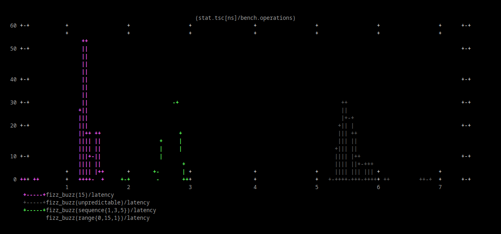
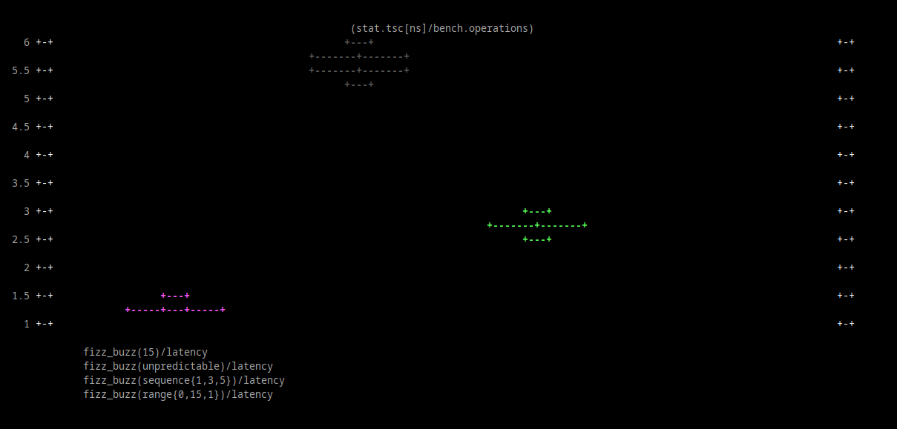
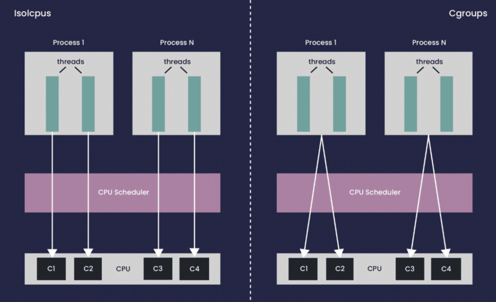
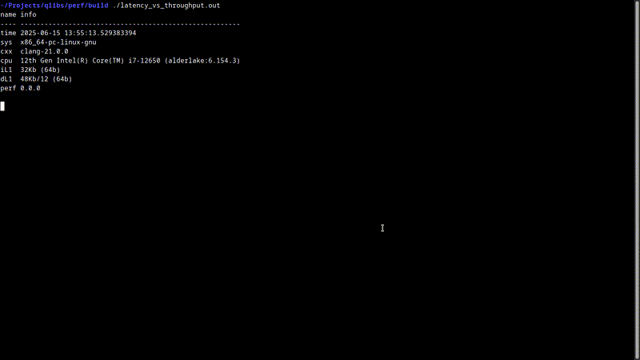

<!doctype html>
<html>
  <head>
    <meta charset="utf-8">
    <meta name="viewport" content="width=device-width, initial-scale=1.0, maximum-scale=1.0, user-scalable=no">

    <title>Performance Is Not a Number: Avoiding Microbenchmarking Pitfalls</title>

    <link rel="stylesheet" href="reveal.js/css/reveal.css">
    <link rel="stylesheet" href="reveal.js/css/theme/league.css" id="theme">
    <link rel="stylesheet" href="extensions/plugin/line-numbers/line-numbers.css">
    <link rel="stylesheet" href="extensions/css/highlight-styles/zenburn.css">
    <link rel="stylesheet" href="extensions/css/custom.css">

    <style>
      .reveal h1, .reveal h2, .reveal h3, .reveal h4, .reveal h5 { text-transform: none; }
    </style>

    <script>
      var link = document.createElement( 'link' );
      link.rel = 'stylesheet';
      link.type = 'text/css';
      link.href = window.location.search.match( /print-pdf/gi ) ? 'reveal.js/css/print/pdf.css' : 'reveal.js/css/print/paper.css';
      document.getElementsByTagName( 'head' )[0].appendChild( link );

      function set_address(self, remote, local) {
        if (window.location.search.match("local")) {
          self.href = local;
        } else {
          self.href = remote;
        }
      }
    </script>

    <meta name="apple-mobile-web-app-capable" content="yes">
    <meta name="apple-mobile-web-app-status-bar-style" content="black-translucent">
  </head>

  <body>
    <div class="reveal">
      <div class="slides">
          <script type="text/template">
          </script>
          </section>

          <section data-markdown=""
                   data-separator="^====+$"
                   data-separator-vertical="^----+$">
          <script type="text/template">
<!-- .element: data-background-image="images/title.png" data-background-size="100%" -->
<br />&nbsp;
<br />&nbsp;
<br />&nbsp;

#### &nbsp; &nbsp; &nbsp; Nanosecond count!
<!-- .element: style="text-align:left" -->


----

#### Performance - [https://www.intel.com/.../articles/moores-law.html](https://www.intel.com/content/www/us/en/history/virtual-vault/articles/moores-law.html)
<!-- .element: style="text-align:left" -->

<table>
  <tr>
  <td>
  <pre>
(~) Frequency
 - 1 cycle (4Ghz)       0.25ns
 - 1 cycle (5Ghz)       0.20ns&nbsp;<br />
(⬆️) Number of transistors
 - Cores/Scalar/Cache
   ~ dL1 cache          0.50ns
   ~ dL2 cache          3.00ns
   ~ Branch Mispredict  3.00ns
   ~ dL3 cache         10.00ns
   ~ DRAM              70.00ns
</pre>
  </td>
  <td>
    
  </td>
</tr>
</table>

----

#### Always Measure! - "If you can’t measure it, you can’t improve it"
<!-- .element: style="text-align:left" -->

```c
System Under Test (SUT)

 ├─ Measure
 ├─ Profile
 ├─ Analyze
 ├─ Optimize // High-Level: Design, Algorithms, ...
 │  └─ Microbenchmarks
 │     ├─ Measure
 │     ├─ Profile
 │     ├─ Analyze
 │     ├─ Optimize // Low-Level: SIMD, SWAR, DOD, CTE, Par, ...
 │     └─ Test
 └─ Test // End-to-End: Prod-like
```

----

#### Always Measure! - https://www.brendangregg.com
<!-- .element: style="text-align:left" -->

<table>
<tr>
<td></td>
<td></td>
</tr>
</table>

```sh
perf stat -e cycles,instructions,cache-misses ./a.out
perf probe -x /usr/lib/libc.so malloc
perf record -g probe_libc:malloc ./a.out
bpftrace -e 'tracepoint:syscalls:sys_enter_* { @[probe] = count(); }'
bpftrace -e 'tracepoint:tcp:tcp_connect { printf("%d", args->dport); }'
...
```
<!-- .element: style="text-align:left" -->

----

#### Always Measure! - [linux-perf](https://perf.wiki.kernel.org)
<!-- .element: style="text-align:left" -->

```cpp
import prof; // https://github.com/qlibs/prof

int main() {
  prof::linux_perf profiler{"/dev/shm/perf"};

  profiler.start();
  // ...
  profiler.stop();
}
```
<!-- .element: style="text-align:left" -->

```sh
perf stat/record ... --control=fifo:/dev/shm/perf --delay=-1 ./a.out
```

----

#### Always Measure! - [callgrind](https://valgrind.org/docs/manual/cl-manual.html)
<!-- .element: style="text-align:left" -->

```cpp
import prof; // https://github.com/qlibs/prof

int main() {
  prof::callgrind profiler{"simulation"};

  while (true) {
    profiler.reset();
    profiler.start();

    if (action) {
      // ...
      profiler.stop();
      profiler.flush();
    }
  }
}
```

```sh
valgrind --tool=callgrind --branch-sim=yes --instr-atstart=no ./a.out
```

----

#### Always Measure! - [llvm-xray](https://llvm.org/docs/XRay.html)
<!-- .element: style="text-align:left" -->

```cpp
function:
  // nop ...    // -fxray-instrument
  xor eax, eax
  ret
  // nop ...    // -fxray-instrument
```

```cpp
int main() {
  // ...
  auto handler = [](int func_id, XRayEntryType entry) {
    if (entry == XRayEntryType::ENTRY) {
      profiler.start();
    } else {
      profiler.stop();
    }
  };
  __xray_set_handler(+handler);
  __xray_patch(); // [code patching] nop -> jmp &handler
}
```

```sh
clang++ -fxray-instrument -fxray-function-list=function.txt
```

----

#### Always Measure!
<!-- .element: style="text-align:left;" -->

##### - linux-perf - https://perf.wiki.kernel.org
<!-- .element: style="text-align:left; margin: 0 0;" -->
##### - dtrace - https://github.com/opendtrace
<!-- .element: style="text-align:left; margin: 0 0;" -->
##### - intel-vtune - https://www.intel.com/content/www/us/en/docs/vtune-profiler
<!-- .element: style="text-align:left; margin: 0 0;" -->
##### - amd-uprof - https://www.amd.com/en/developer/uprof.html
<!-- .element: style="text-align:left; margin: 0 0;" -->
##### - toplev - https://github.com/andikleen/pmu-tools
<!-- .element: style="text-align:left; margin: 0 0;" -->
##### - bcc - https://github.com/iovisor/bcc
<!-- .element: style="text-align:left; margin: 0 0;" -->
##### - bpftrace - https://github.com/bpftrace/bpftrace
<!-- .element: style="text-align:left; margin: 0 0;" -->
##### - callgrind - https://valgrind.org/docs/manual/cl-manual.html
<!-- .element: style="text-align:left; margin: 0 0;" -->
##### - coz - https://github.com/plasma-umass/coz
<!-- .element: style="text-align:left; margin: 0 0;" -->
##### - gperftools - https://github.com/gperftools/gperftools
<!-- .element: style="text-align:left; margin: 0 0;" -->
##### - likwid - https://github.com/RRZE-HPC/likwid
<!-- .element: style="text-align:left; margin: 0 0;" -->
##### - tracy - https://github.com/wolfpld/tracy
<!-- .element: style="text-align:left; margin: 0 0;" -->
##### - magic-trace - https://github.com/janestreet/magic-trace
<!-- .element: style="text-align:left; margin: 0 0;" -->

##### ...
<!-- .element: style="text-align:left; margin: 0 0;" -->

----

<table>
<tr>
<td>
  <h4>Hot-spot</h4>
</td>
<td>
  <h4>Instruction count</h4>
</td>
</tr>
<tr>
<td>

<pre>
I/O
</pre>
</td>
<td>
<pre>
Modern processors execute nearly as
many instructions per cycle as you
can supply (I/O, branch, memory)
- Reduce overall instruction count
instruction per cycle (IPC)
max.ipc <= dispatch_width;
we know the target (uOps)
</pre>
</td>
</tr>
</table>


----

#### Microbenchmarking
<!-- .element: style="text-align:left" -->

```cpp
/**
* Iteration speed
* Understanding
* Isolation
*/
auto bench(auto code) -> measurements;
```

----

#### Performance Is Not a Number!
<!-- .element: style="text-align:left" -->

```cpp
auto fizz_buzz = [] [[gnu::optimize("O3")]] (int n) {
       if (n % 15 == 0) { return "FizzBuzz"; }
  else if (n % 3  == 0) { return "Fizz";     }
  else if (n % 5  == 0) { return "Buzz";     }
  return "Unknown";
};
```
```cpp
bench(fizz_buzz) -> 42ns // ?
```
<!-- .element: class="fragment" data-fragment-index="1" style="text-align:left" -->

----

#### Performance Is Not a Number! - https://makelinux.github.io/kernel/map
<!-- .element: style="text-align:left" -->

<table>
<tr>
  <td>
 <pre><code>int main() {
  bench(fizz_buzz);
  // ...
}</code></pre>
  </td>
  <td>
  
  </td>
  </tr>
</table>

----

#### Performance Is Not a Number! - https://chipsandcheese.com
<!-- .element: style="text-align:left" -->

<table>
<tr>
  <td>
 <pre><code>main:
  mov  ...
  cmp  ...
  jbe  ...
  ...
  ret</code></pre>
  </td>
  <td>
  
  </td>
  </tr>
</table>

----

### Avoiding Microbenchmarking Pitfalls
<!-- .element: style="text-align:left" -->

----

#### Disclaimer
<!-- .element: style="text-align:left" -->

##### - Focused on [x86-64-linux-gnu](https://en.wikipedia.org/wiki/X86-64)
<!-- .element: style="text-align:left" -->

##### - Powered by https://github.com/qlibs/perf
<!-- .element: style="text-align:left" -->

```
C++23, linux/perf, llvm/mca, gnuplot/sixel
```
<!-- .element: style="margin: 2% 2%;" -->

----

#### Benchmarking
<!-- .element: style="text-align:left" -->

<!-- .element: style="text-align:left; margin: 0 0;" -->
#### - google-benchmark - https://github.com/google/benchmark
<!-- .element: style="text-align:left; margin: 0 0;" -->
#### - nanobench - https://github.com/martinus/nanobench
<!-- .element: style="text-align:left; margin: 0 0;" -->
#### - celero - https://github.com/DigitalInBlue/Celero
<!-- .element: style="text-align:left; margin: 0 0;" -->

---

#### - nanoBench - https://github.com/andreas-abel/nanoBench
<!-- .element: style="text-align:left; margin: 0 0;" -->
#### - uarch-bench - https://github.com/travisdowns/uarch-bench
<!-- .element: style="text-align:left; margin: 0 0;" -->
#### - llvm-exegesis - https://llvm.org/docs/CommandGuide/llvm-exegesis.html
<!-- .element: style="text-align:left; margin: 0 0;" -->

----

### [0] Not having accurate measurements
<!-- .element: style="text-align:left" -->

----

```cpp
auto bench(auto code) -> nanoseconds {
  auto start = now(); // ?
  // ...
}
```

----

```cpp
// Timing

[0]                     [1]                 [2]           [3]
----------------------  ------------------- ------------- ------
perf::stat::tsc         Time-Stamp-Counter  rdtsc/rdtscp  Low
perf::stat::real_time   Wall clock          system_clock  High
perf::stat::cpu_time    Process CPU         clock_gettime High
perf::stat::thread_time Thread CPU          clock_gettime High
perf::stat::steady_time monotonic clock     steady_clock  Medium
```

```
[0] Name
[1] Description
[2] Mechanism
[3] Overhead
```
----

#### Timing - Accurate measurements
<!-- .element: style="text-align:left" -->

```cpp
perf::verify(perf::compiler::is_elided(
  [] { fizz_buzz(42); }
);
```

```cpp
auto measurement_naive_v1 = [](auto fn) {
  auto n = std::rand();
  chorono::system_clock::now();
  perf::compiler::prevent_elision(fn, n));
  chorono::system_clock::now();
};
```

```cpp
auto measurement_naive_v2 [](auto fn, auto...ts) {
  chorono::system_clock::now();
  for (auto i = 0 ; i < N; ++i) {
    perf::compiler::prevent_elision(fn(fizz_buzz, i));
  }
};
```

----

```cpp
import perf;

int main() {
  perf::runner bench{};

  bench(fizz_buzz/measurement_naive_v1);
  bench(fizz_buzz/measurement_naive_v2);
  bench(fizz_buzz/measurement_naive_v3);

  perf::report(bench[perf::stat::tsc]);
}
```

----

```md
Latency
 ├─ Time it takes for a single
 │  operation to complete
 ├─ Acceleration from 0–60 mph
 └─ ns/op

Throughput
 ├─ Total number of operations
 │  completed in a given amount of time
 ├─ Total distance traveled in 1 hour
 └─ op/s
```
<!-- .element: style="text-align:left" -->

----

```cpp
auto what_is_that_measuring = [](auto fn, auto... ts) {
  for (auto i = 0u; i < N; ++i) {
    perf::compiler::prevent_elision(fn(ts...));
  } // out of order, speculative execution, ...
};
```

----

```cpp
auto latency    = nanoseconds(total_time) / operations;   // ns/op
auto throughupt = operations / seconds(total_time);       // op/s
auto throughupt = items_processed / seconds(total_time);  // Gb/s
```

----

```cpp
auto latency = []<auto Alignment>(auto fn, auto... ts) {
  perf::code::align(Alignment) for (auto i = 0u; i < N; ++i) {
    checksum ^= fn(checksum ^ ts...); // data dependency
    std::atomic_thread_fence(memory_order);
  }
};
```
```cpp
auto latency = []<auto Alignment>(auto fn, auto... ts) {
  unroll<2x> - unrll<1x>; // https://uops.info/table.html
};
```

----

```cpp
int main() {
  perf::runner bench{};

  bench(fizz_buzz/latency);
  bench(fizz_buzz/latency);
  bench(fizz_buzz/latency);

  perf::report(bench[perf::stat::tsc]);
}
```

```
// all runs
```

----

#### CPU vs. FPGA - http://www.qbaylogic.com
<!-- .element: style="text-align:left" -->


----

```cpp
auto throughput = []<auto Alignment>(auto fn, auto... ts) {
  perf::code::align(Alignment) for (auto i = 0u; i < N; ++i) {
    perf::compiler::prevent_elision(fn(ts...));
  }
};
```

```cpp
perf::bench::policy::seq;
perf::bench::policy::unseq;
perf::bench::policy::unroll;
perf::bench::policy::par;
...
perf::bench::policy::cuda;
```
<!-- .element: class="fragment" data-fragment-index="1" style="text-align:left" -->

----

#### Accurate measurements
<!-- .element: style="text-align:left" -->

```cpp
/**
* setup() {
*   // cpu[0].btb(ip) = true;           # can learn 10'000 1/0 branches
*   //                                  # [first-time] backwards branches are taken
*   // cpu[0].port(ALU.1) = true;       # enable/disable
*   // cpu[0].cache<dL1>(addr) = value; # enable/disable
*   // ...
* }
*/
auto bench(auto fn, auto... ts) -> measurements {
  // ...
  for (auto i = 0u; i < N; ++i) {
    fn(ts[i]...); // different inputs
  }
  // ...
}
```

```cpp
// shuffle(measure(repeat(fn)) -> measure(repeat(shuffle(fn));
```

----

```cpp
// constant
bench(fizz_buzz/latency, std::integral_constant<int, 3>{});
bench(fizz_buzz/latency, std::integral_constant<int, 5>{});
bench(fizz_buzz/latency, std::integral_constant<int, 15>{});
```

```cpp
// predictable
bench(fizz_buzz/latency, 3);
bench(fizz_buzz/latency, 5);
bench(fizz_buzz/latency, 15);

for (auto i = 0; i < N; ++i) {
  bench(fizz_buzz/latency, i);
}
```

```cpp
bench(fizz_buzz/latency, sequence<int>{1, 3, 5});
bench(fizz_buzz/latency, sequence<int>{3, 1, 5});
bench(fizz_buzz/latency, sequence<int>{0, 1, 5, 3, 15, 0});
bench(fizz_buzz/latency, range<int>{.start = 0, .stop = 10, .step = 1});
```

----

```cpp
// unpredictable
bench(fizz_buzz/latency, unpredictable<int>);
bench(fizz_buzz/latency, uniform<int>{.min = 0, .max = 15});
bench(fizz_buzz/latency, normal<int>{});
bench(fizz_buzz/latency, choice<int>{});
```

```cpp
// pollute-heap
```

----

#### Optimizations
<!-- .element: style="text-align:left" -->

```cpp
auto fizz_buzz_v1 = [] [[gnu::optimize("O1")]] (int n);
auto fizz_buzz_v2 = [] [[gnu::optimize("O2")]] (int n);
auto fizz_buzz_v3 = [] [[gnu::optimize("O3,fast-math")]] (int n);
auto fizz_buzz_v4 = [] [[gnu::target("avx512f")]] (int n);
auto fizz_buzz_v5 = [] [[gnu::aligned("16")]] (int n);
auto fizz_buzz_v6 = [] [[gnu::always_inline]] (int n) {
  // ...
  perf::code::align(64); // clang::code_align(64)
  // ...
};
...
```

----

#### Warm/Cold
<!-- .element: style="text-align:left" -->

```cpp
auto latency{.setup = [] { fn(ts...); } ; // warmup
auto latency{.teardown = [] { flush::cache::; } //
```

----

#### Statistically significant measurements
<!-- .element: style="text-align:left" -->

```cpp
// Measurements are NOT independent
// Measurements are NOT following normal distribution
```

----

```cpp
// simplified

auto bench(auto fn, auto... ts) -> measurements {
  for (auto i = 0; i < samples; ++i) {
    for (auto i = 0; i < iterations; ++i) {
      runner(fn[ts]...);
    }

    const auto degrees_of_freedom = *samples.min - 1u;
    const auto t_score = metric::stat::t_score(*samples.confidence_level, degrees_of_freedom);
    const auto margin_of_error = (1. - *samples.confidence_level) * metric::stat::mean(time);
    return std::min(std::max(std::size_t(std::ceil(std::pow((t_score * metric::stat::stddev(time)) / margin_of_error, 2.)) - *samples.min), *samples.min), *samples.max);
  }
};
```

<!-- .element: style="text-align:left" -->

----

```cpp
// metric::stat

using perf::metric::min;
using perf::metric::max;
using perf::metric::mean;
using perf::metric::geomean;     // geometric mean
using perf::metric::median;

using perf::metric::percentile;
using perf::metric::p10;
using perf::metric::p50;
using perf::metric::p75;
using perf::metric::p90;
using perf::metric::p99;

using perf::metric::stddev;      // degrees_of_freedom = 1
using perf::metric::variance;
using perf::metric::sem;         // standard error
using perf::metric::mae;         // median absolute errror
using perf::metric::mad;         // median absolute deviation
using perf::metric::cv;          // coefficient of variation
```

----

```cpp
perf::report(bench[perf::stat::tsc], min, median, p90, p99);
```

```cpp
// min, median, percentiles instead of mean
```

----

#### baseline (speedup, relative)
<!-- .element: style="text-align:left" -->

```cpp
auto fizz_buzz_lut = [] [[gnu::optimize("O3")]] (int n) {
  static constexpr std::array lut{
    "Unknown","Unknown","Fizz","Unknown","Buzz",
    "Fizz","Unknown","Unknown","Fizz","Buzz",
    "Unknown","Fizz","Unknown","Unknown","FizzBuzz"
  };
  return lut[(n-1) % 15];
};
```

```cpp
bench(baseline(fizz_buzz/latency), unpredictable<int>);
bench(fizz_buzz_lut/latency, unpredictable<int>);
```

----

#### Plotting
<!-- .element: style="text-align:left" -->

#### - jupyter notebook / matplotlib - https://jupyter.org
<!-- .element: style="text-align:left; margin: 0 0;" -->
#### - gnuplot / sixel - http://www.gnuplot.info
<!-- .element: style="text-align:left; margin: 0 0;" -->
  ```cpp
  PERF_IO_PLOT_TERM='sixel'                 # terminal
  PERF_IO_PLOT_TERM='dumb size 80,25'       # terminal asci
  PERF_IO_PLOT_TERM='dumb size 150,25 ansi' # terminal ansi
  PERF_IO_PLOT_TERM='wxt'                   # popup windows
  PERF_IO_PLOT_TERM='canvas'                # html
  PERF_IO_PLOT_TERM='png'                   # png

  // https://arewesixelyet.com              # xterm -ti 340, ...
  ```
<!-- .element: style="text-align:left" -->
#### ...
<!-- .element: style="text-align:left; margin: 0 0;" -->

----

```cpp
int main() {
  perf::runner bench{};

  bench(fizz_buzz/latency, 15);
  bench(fizz_buzz/latency, unpredictable<int>);
  bench(fizz_buzz/latency, sequence<int>{1, 3, 5});
  bench(fizz_buzz/latency, range<int>{.start = 0, .stop = 15});

  perf::plot::bar (bench[perf::stat::tsc / perf::bench::operations]);
  perf::plot::hist(bench[perf::stat::tsc / perf::bench::operations]);
  perf::plot::box (bench[perf::stat::tsc / perf::bench::operations]);
  perf::plot::ecdf(bench[perf::stat::tsc / perf::bench::operations]);
  // ...
}
```

----

#### Bar
<!-- .element: style="text-align:left" -->

```cpp
perf::plot::bar(bench[perf::time::tsc / perf::bench::operations]);
```

<p align="left">

</p>

----

```cpp
auto latency = perf::bench::latency{.iterations = 10, .samples = 1};
```

<p align="left">

</p>

----

#### Histogram
<!-- .element: style="text-align:left" -->

```cpp
perf::plot::hist(bench[perf::time::tsc / perf::bench::operations]);
```

<p align="left">

</p>

----

#### Box / ErrorBar
<!-- .element: style="text-align:left" -->

```cpp
perf::plot::box(bench[perf::time::tsc / perf::bench::operations]);
```

<p align="left">

</p>

----

```cpp
perf::plot::box(bench[perf::time::tsc / perf::bench::operations], perf::plot::n^2); // big0
```

----

#### Empirical distribution function
<!-- .element: style="text-align:left" -->

```cpp
perf::plot::ecdf(bench[perf::time::tsc / perf::bench::operations]);
```

<p align="left">

</p>

----

```sh
PERF_IO_PLOT_TERM="dumb ansi size 150,25"
```

<p align="left">

</p>

<p align="left">

</p>

<p align="left">

</p>

<p align="left">

</p>

----

### [1] Not following structured analysis method
<!-- .element: style="text-align:left" -->

----

#### [Top down Microarchitecture Analysis Method](https://rcs.uwaterloo.ca/~ali/cs854-f23/papers/topdown.pdf)
<!-- .element: style="text-align:left" -->

```cpp
 ├─ [1] Retiring
 │   ├─ [2] Base
 │   └─ [2] Complex µops
 │
 ├─ [1] Bad Speculation
 │   ├─ [2] Branch Mispredictions
 │   └─ [2] Machine Clears
 │
 ├─ [1] Front-End Bound
 │   ├─ [2] Front-End Latency
 │   │   ├─ [3] iL1 Misses
 │   │   ├─ [3] iTLB Misses
 │   │   └─ [3] Branch Resteers
 │   └─ [2] Front-End Bandwidth
 │
 └─ [1] Back-End Bound
     ├─ [2] Core Bound
     │   └─ [3] Execution ports utilization
     │   └─ [3] Divider
     └─ [2] Memory Bound
         ├─ [3] dL1 Bound
         ├─ [3] dL2 Bound
         ├─ [3] dL3 Bound
         └─ [3] DRAM Bound
```
<!-- .element: style="font-size:19px;" -->

----

#### Performance Monitoring Unit (PMU)
<!-- .element: style="text-align:left" -->

```cpp
// Speed vs. Control vs. Understanding
```

```
PMC   - Performance-Monitoring Counter
RDPMC - Read Performance-Monitoring Counters
PEBS  - Precise Event-Based Sampling
LBR   - Last Branch Record
IPT   - Intel Processor Trace (Intel, Apple M4)
```

----

<!-- .element: style="text-align:left" -->

```cpp
perf::report(bench[
  perf::stat::top_down::retiring,
  perf::stat::top_down::bad_speculation,
  perf::stat::top_down::frontend_bound,
  perf::stat::top_down::backend_bound
]);
```

-----

#### Backend Bound
<!-- .element: style="text-align:left" -->

----

```cpp
perf::profiler profiler{perf::stat::tsc};

const auto invoke = [&](auto&& fn, auto&&... ts) {
  profiler.start();
  perf::compiler::prevent_elision(fn(ts...));
  profiler.stop();
};
```

```cpp
perf::log(invoke(fizz_buzz, 42)[]); // 8ns
perf::log(invoke(fizz_buzz, 1)[]);  // 2ns
```

----

#### Stat / Performance Measuring Counters (PMC)
<!-- .element: style="text-align:left" -->


```cpp
using perf::stat::cycles;
using perf::stat::instructions;
using perf::stat::branch_misses;
using perf::stat::branches;
using perf::stat::l1_misses;
using perf::stat::itlb_loads;
using perf::stat::itlb_load_misses;
...
```

```cpp
perf::profiler profiler{perf::stat::cycles, perf::stat::instructions};
static_assert(profiler.is_syscall_free);

//start(); // RDPMC - Read Performance Monitoring Counters (current thread)
perf::log(invoke(fizz_buzz, 42)[]); // 8ns
perf::log(invoke(fizz_buzz, 1)[]);  // 2ns
```

----

#### Record / Sampling
<!-- .element: style="text-align:left" -->

```cpp
// LBR - Last Branch Record
using perf::record::cycles;
using perf::record::instructions;
...
```

```cpp
// PEBS - Precise Event-Based Sampling / IBS (AMD)
using perf::record::mem_loads; // cycles 3
using perf::record::mem_stores;
```

```cpp
perf::profiler profiler{perf::record::mem_loads}
profiler.start();
profiler.stop();
```

----

#### Tracing
<!-- .element: style="text-align:left" -->

```cpp
// IPT - Intel Processor Trace
using perf::trace::instructions;
using perf::trace::cycles;
```

```cpp
profiler.start();
foo();
profiler.stop();
```

```cpp
log // hexdump
verify(5 == instructions);
verify(3 == instructinos);
```

----

#### Stat / Metrics
<!-- .element: style="text-align:left" -->

```cpp
auto ipc = instructions / cycles;
auto cpi = cycles / instructions;
auto l1_dcache_miss_rate = l1_dcache_load_misses / l1_dcache_loads;
auto llc_miss_rate = llc_misses / cache_references;
auto cache_miss_rate = cache_misses / cache_references;
auto branch_miss_rate = branch_misses / branches;
auto dtlb_miss_rate = dtlb_load_misses / dtlb_loads;
auto context_switch_rate = context_switches / cycles;
auto frontend_stall_rate = stalled_cycles_frontend / cycles;
...
```

```cpp
perf::log(profiler[ipc]);
perf::log(profiler[cpi]);
```

----

#### Profiler
<!-- .element: style="text-align:left" -->

```cpp
perf::profiler profiler{
  perf::stat::tsc,                                   // RDTSC
  perf::stat:cycles, perf::stat::instructions,       // RDPMC
  perf::trace::instructions, perf::trace::cycles,    // IPT
  perf::record::mem_loads, perf::record::mem_stores  // PEBS, LBR
};
```

```cpp
static_assert(profiler.is_syscall_free);
static_assert(profiler.is_mulitplexing_free);
```

```cpp
profiler.start();
profiler.stop();
```

----

#### Flamegraph - https://github.com/brendangregg/FlameGraph
<!-- .element: style="text-align:left" -->

```cpp
perf::plot::flamegraph(bench[perf::record::cycles]);
```

<p align="left">

</p>

-----

### Front-end Bound
<!-- .element: style="text-align:left;" -->

----

#### Static Analysis
<!-- .element: style="text-align:left;" -->

#### - llvm-mca - https://llvm.org/docs/CommandGuide/llvm-mca.html
<!-- .element: style="text-align:left; margin: 0 0;" -->

#### - uica - https://uica.uops.info
<!-- .element: style="text-align:left; margin: 0 0;" -->

#### - osaca - https://github.com/RRZE-HPC/OSACA
<!-- .element: style="text-align:left; margin: 0 0;" -->

----

#### Machine Code Analyzer (MCA)
<!-- .element: style="text-align:left;" -->

```cpp
perf::analyzer analyzer{perf::mca::assembly};

analyzer << profiler[perf::trace::instructions];
// analyzer << region{perf::code::labels["a"], perf::code::labels["b"]};
```

```cpp
perf::log(analyzer[perf::mca::timeline]);
perf::log(analyzer[perf::mca::resource_pressure]);
```

<!-- .element: style="text-align:left;" -->

----

```cpp
// MCA

using perf::mca::address;
using perf::mca::encoding;
using perf::mca::size;
using perf::mca::assembly;
using perf::mca::uops;
using perf::mca::latency;
using perf::mca::rthroughput;
using perf::mca::may_load;
using perf::mca::may_store;
using perf::mca::has_side_effects;

using perf::mca::timeline;
using perf::mca::resource_pressure;
using perf::mca::bottleneck;

using perf::mca::source; // requires debug symbols (-g)

...
```

----

```cpp
perf::profiler profiler{perf::trace::instructions, perf::trace::cycles};

const auto invoke = [&](auto fn, auto... ts) {
  profiler.start();
  perf::compiler::prevent_elision(fn(ts...));
  profiler.stop();
};

invoke(fizz_buzz, 5);
```

```cpp
perf::analyzer analyzer{perf::mca::assembly};
analyzer << profiler[trace::instructions];
```

```cpp
perf::annotate(analyzer[]); // [] - all tuple elements
```

----

```cpp
int main() {
  perf::runner bench{};

  bench(fizz_buzz/latency, 15);
  bench(fizz_buzz/latency, 5);
  bench(fizz_buzz/latency, unpredictable<int>);
  // ...

  perf::annotate<perf::vsplit>(bench[perf::mca::assembly]);
}
```

----

```cpp
// disassemble(labels["fn.entry"], labels["fn.exit"])
```

```
fizz_buzz(15)/latency:                fizz_buzz(5)/latency:                 fizz_buzz(unpredictable)/latency:
 [0] [1]                               [0] [1]                               [0] [1]
 --- ------------------------------    --- ------------------------------    --- ------------------------------
  1. imul eax, edi, 0xeeeeeeef          1. imul eax, edi, 0xeeeeeeef          1. imul eax, edi, 0xeeeeeeef
  2. add eax, 0x8888888                 2. add eax, 0x8888888                 2. add eax, 0x8888888
  3. cmp eax, 0x11111111                3. cmp eax, 0x11111111                3. cmp eax, 0x11111111
  4. jb 0x36                            4. jb 0x36                            4. jb 0x36
  5. imul eax, edi, 0xaaaaaaab          5. imul eax, edi, 0xaaaaaaab          5. imul eax, edi, 0xaaaaaaab
  6. add eax, 0x2aaaaaaa                6. add eax, 0x2aaaaaaa                6. add eax, 0x2aaaaaaa
  7. cmp eax, 0x55555555                7. cmp eax, 0x55555555                7. cmp eax, 0x55555555
  8. jb 0x2d                            8. jb 0x2d                            8. jb 0x2d
  9. imul eax, edi, 0xcccccccd          9. imul eax, edi, 0xcccccccd          9. imul eax, edi, 0xcccccccd
 10. add eax, 0x19999999               10. add eax, 0x19999999               10. add eax, 0x19999999
 11. cmp eax, 0x33333333               11. cmp eax, 0x33333333               11. cmp eax, 0x33333333
 12. lea rcx, [rip + 0x14cb]           12. lea rcx, [rip + 0x14cb]           12. lea rcx, [rip + 0x14cb]
 13. lea rax, [rip + 0x14ce]           13. lea rax, [rip + 0x14ce]           13. lea rax, [rip + 0x14ce]
 14. cmovb rax, rcx                    14. cmovb rax, rcx                    14. cmovb rax, rcx
 15. jmp 0x10                          15. jmp 0x10                          15. jmp 0x10
 16. lea rax, [rip + 0x14b3]           16. lea rax, [rip + 0x14b3]           16. lea rax, [rip + 0x14b3]
 17. jmp 0x7                           17. jmp 0x7                           17. jmp 0x7
 18. lea rax, [rip + 0x14b3]           18. lea rax, [rip + 0x14b3]           18. lea rax, [rip + 0x14b3]
 19. mov qword ptr [rsp - 0x8], rax    19. mov qword ptr [rsp - 0x8], rax    19. mov qword ptr [rsp - 0x8], rax

 [0] index                             [0] index                             [0] index
 [1] mca.assembly # intel              [1] mca.assembly # intel              [1] mca.assembly # intel
```
<!-- .element: style="font-size:13px" -->

----

```cpp
// disassemble(trace::instructions)
```

```
fizz_buzz(15)/latency:                fizz_buzz(5)/latency:                 fizz_buzz(unpredictable)/latency:
 [0] [1]                               [0] [1]                               [0] [1]
 --- ------------------------------    --- ------------------------------    --- ------------------------------
  1. imul eax, edi, 0xeeeeeeef          1. imul eax, edi, 0xeeeeeeef          1. imul eax, edi, 0xeeeeeeef
  2. add eax, 0x8888888                 2. add eax, 0x8888888                 2. add eax, 0x8888888
  3. cmp eax, 0x11111111                3. cmp eax, 0x11111111                3. cmp eax, 0x11111111
  4. jb 0x36                            4. jb 0x36                            4. jb 0x36
  5. lea rax, [rip + 0x1397]            5. imul eax, edi, 0xaaaaaaab          5. imul eax, edi, 0xaaaaaaab
  6. jmp 0x7                            6. add eax, 0x2aaaaaaa                6. add eax, 0x2aaaaaaa
  7. mov qword ptr [rsp - 0x8], rax     7. cmp eax, 0x55555555                7. cmp eax, 0x55555555
                                        8. jb 0x2d                            8. jb 0x2d
                                        9. imul eax, edi, 0xcccccccd          9. lea rax, [rip + 0x1397]
                                       10. add eax, 0x19999999               10. mov qword ptr [rsp - 0x8], rax
                                       11. cmp eax, 0x33333333               11. imul eax, edi, 0xcccccccd
                                       12. lea rcx, [rip + 0x13af]           12. add eax, 0x19999999
                                       13. lea rax, [rip + 0x13b2]           13. cmp eax, 0x33333333
                                       14. cmovb rax, rcx                    14. lea rcx, [rip + 0x13af]
                                       15. jmp 0x10                          15. lea rax, [rip + 0x13b2]
                                       16. mov qword ptr [rsp - 0x8], rax    16. cmovb rax, rcx
                                                                             17. jmp 0x10
                                                                             18. lea rax, [rip + 0x1397]
                                                                             19. jmp 0x7

 [0] index                             [0] index                             [0] index
 [1] mca.assembly # intel              [1] mca.assembly # intel              [1] mca.assembly # intel
```
<!-- .element: style="font-size:13px" -->

----

```cpp
perf::annotate(bench[
  mca::address,  mca::encoding, mca::size,
  mca::assembly, mca::latency,  mca::uops
]);
```

----

```cpp
// timeline
// resource_pressure
```

----

```
fizz_buzz(unpredictable)/latency:
 [0] [1]  [2]                   [3] [4]                           [5] [6]
 --- ---- --------------------- -- ------------------------------ -- --
  1. b8c0 69 c7 ef ee ee ee      6 imul eax, edi, 0xeeeeeeef       3  1
  2. b8c6 05 88 88 88 08         5 add eax, 0x8888888              1  1
  3. b8cb 3d 11 11 11 11         5 cmp eax, 0x11111111             1  1
  4. b8d0 72 36                  2 jb 0x36                         1  1
  5. b8d2 69 c7 ab aa aa aa      6 imul eax, edi, 0xaaaaaaab       3  1
  6. b8d8 05 aa aa aa 2a         5 add eax, 0x2aaaaaaa             1  1
  7. b8dd 3d 55 55 55 55         5 cmp eax, 0x55555555             1  1
  8. b8e2 72 2d                  2 jb 0x2d                         1  1
  9. b911 48 8d 05 58 12 00 00   7 lea rax, [rip + 0x1258]         1  1
 10. b918 48 89 44 24 f8         5 mov qword ptr [rsp - 0x8], rax 12  2
 11. b8e4 69 c7 cd cc cc cc      6 imul eax, edi, 0xcccccccd       3  1
 12. b8ea 05 99 99 99 19         5 add eax, 0x19999999             1  1
 13. b8ef 3d 33 33 33 33         5 cmp eax, 0x33333333             1  1
 14. b8f4 48 8d 0d 70 12 00 00   7 lea rcx, [rip + 0x1270]         1  1
 15. b8fb 48 8d 05 73 12 00 00   7 lea rax, [rip + 0x1273]         1  1
 16. b902 48 0f 42 c1            4 cmovb rax, rcx                  1  1
 17. b906 eb 10                  2 jmp 0x10                        0  0
 18. b908 48 8d 05 58 12 00 00   7 lea rax, [rip + 0x1258]         1  1
 19. b90f eb 07                  2 jmp 0x7                         0  0

 [0] index
 [1] mc.address
 [2] mc.encoding
 [3] mc.size
 [4] mc.assembly # intel
 [5] mc.latency  # instruction have different latencies - less doesn't mean fast
 [6] mc.uops
```
<!-- .element: style="font-size:15px" -->

----

```cpp
#### analyze vs profile
#### trace & analyze
// add record mem_loads
#### show ipc per instruction
```

<!-- .element: style="text-align:left; " -->

----

### [3] Not continuously verifying/testing
<!-- .element: style="text-align:left" -->

----

#### Verifying/Debugging
<!-- .element: style="text-align:left" -->

```cpp
auto sort = []<bool debug>(std::vector<int>& v) {
  std::ranges::sort(v);
  if constexpr (debug) { // doesn't affect benchmarking
    perf::verify(is_sorted(v));
  }
};
```

```cpp
for (auto i = 1; i < 1024; i <<= 1) {
  bench(sort/throughupt, unpredictable<int> | to<std::vector>(i));
}
```
----

#### Testing
<!-- .element: style="text-align:left" -->

```cpp
perf::verify(instructions.size)
perf::verify(asm.instruction == "mov")
perf::verify(asm.instruction.count < non optimizaed)
perf::verify(as.minstruciton.count == c++optimization)

if (perf::info::cpu::features().contains("avx512")) {
}
```

----

```cpp
//mca
perf::verify(entry[0].cycle_dispatched);
perf::verify(entry[0].cycle_executed);
```

```cpp
perf::verify(optimized == []{}); // disassemble compare
perf::verify(optimized < []{}); // disassemble compare
// intel_pt
```

```cpp
auto ok(int x) { return x + 1 > 0; }
auto ub(int x) { return x + 1 > x; }
```

----

### [3] Not having reproducible results
<!-- .element: style="text-align:left" -->


```cpp
// $CXX      // compiler
int main() { // kernel
  // ...     // CPU
}
```

----

#### cpu/info
<!-- .element: style="text-align:left" -->

```cpp
perf::log(perf::info::spec{
  {"time",  std::chrono::system_clock::now()},
  {"sys",   perf::info::sys::triple()},
  {"cxx",   perf::info::compiler()},
  {"cpu",   perf::info::cpu()},
  {"cache", perf::info::memory::cache()},
  // ...
});
```

```sh
name  info
----- -----------------------------------------------------------------
time  2025-09-15 11:30:00
sys   x86_64-pc-linux-gnu
cxx   gcc-15.0.0
cpu   12th Gen Intel(R) Core(TM) i7-12650 (alderlake:6.154.3) / 2.67Ghz
cache iL1: 32Kb/64b, dL1: 48Kb/12/64b
...
```

##### https://en.wikichip.org / cpuid{family:6, model:154, stepping:3}
<!-- .element: style="text-align:left" -->

----

#### sanity-checks
<!-- .element: style="text-align:left" -->

```cpp
int main() {
  perf::verify(perf::info::compiler::NDEBUG);
  perf::verify(perf::info::compiler::OPTIMIZED);
  perf::verify(not perf::info::cpu::freq_scaling);
  // ...
}
```

----

#### self-testing
<!-- .element: style="text-align:left" -->

```cpp
int main() {
  perf::self::test({.verbose = true});
}
```

```cpp
// add chart
// add vs mca
// shows cycles of add, sub,
// shows graph of rdtsc
auto add  = [](int a, int b) { return a + b; };
auto sub  = [](int a, int b) { return a - b; };
auto mult = [](int a, int b) { return a * b; };
auto div  = [](int a, int b) { return a / b; };

stat vs mca::stat
log
| mca.cycles | cycles   |
| 1          | 3 cycles |
```

----

#### Noise reduction
<!-- .element: style="text-align:left" -->

```
# Disable Frequency Scaling
# Disable Processor Boosting
# Disable Turbo Mode
# Disable Hyper-threading
# ...
perf/scripts/tune.sh # pyperf system tune
```
<!-- .element: style="text-align:left" -->

---

```cpp
int main() {
  perf::sys::thread::set_affinity(self, 2); // 0, 1 used by the kernel
  perf::sys::thread::set_priority(self, max);
  // ...
}
```

----

#### Kernel Mode Task-Isolation - https://lwn.net/articles/816298
<!-- .element: style="text-align:left" -->

```sh
isolcpus=<cpu number>,...,<cpu number> # bootloader
```
<!-- .element: style="text-align:left" -->

<p align="left">

</p>

```
cat /sys/devices/system/cpu/isolated # <cpu number>,...,<cpu number>
```

----

#### [Unified Extensible Firmware Interface](https://en.wikipedia.org/wiki/UEFI) (UEFI)
<!-- .element: style="text-align:left" -->

```cpp
int efi_main(perf::uefi::sys* sys) { // no kernel
  perf::runner bench{
    .setup    = [] { perf::cpu::cache::disable(); },
    .teardown = [] { perf::cpu::cache::enable();  },
  };

  bench(fizz_buzz/latency, unpredictable<int>);

  perf::report(
    sys->stdout,
    bench[perf::stat::tsc, perf::stat::cycles], // rdtsc, rdpmc
    min, median, p90, p99
  );
}
```
```cpp
$CXX -DPERF_UEFI \
  -target x86_64 -ffreestanding -fno-exceptions -fno-rtti \
  ...
```

----

### "Code can tell you what works, not what doesn't"
<!-- .element: style="text-align:left" -->

##### [https://github.com/qlibs/perf#studies](https://github.com/qlibs/perf/discussions/4)
<!-- .element: style="text-align:left" -->

----

```cpp
./fizz_buzz | perf/scripts/export.sh markdown | gh gist create --public
```



----

### Performance Is Not a Number!
<!-- .element: style="text-align:left" -->

----

### Further reading
<!-- .element: style="text-align:left" -->

##### Intel - https://www.intel.com/content/www/us/en/developer/articles/technical/intel-sdm.html
<!-- .element: style="text-align:left; margin: 0 0;" -->
##### AMD - https://docs.amd.com/v/u/en-US/40332-PUB_4.08
<!-- .element: style="text-align:left; margin: 0 0;" -->
##### ARM - https://developer.arm.com/documentation/ddi0487/latest
<!-- .element: style="text-align:left; margin: 0 0;" -->
##### Apple - https://developer.apple.com/documentation/apple-silicon/cpu-optimization-guide
<!-- .element: style="text-align:left; margin: 0 0;" -->

---

##### Resources - [https://github.com/qlibs/perf#resources](https://github.com/qlibs/perf?tab=readme-ov-file#User-Guide)
<!-- .element: style="text-align:left; margin: 0 0;" -->

##### Studies - [https://github.com/qlibs/perf#studies](https://github.com/qlibs/perf/discussions/4)
<!-- .element: style="text-align:left; margin: 0 0;" -->
          </script>
        </section>

      </div>
    </div>

    <script src="reveal.js/lib/js/head.min.js"></script>
    <script src="reveal.js/js/reveal.js"></script>

    <script>

      // Full list of configuration options available at:
      // https://github.com/hakimel/reveal.js#configuration
      Reveal.initialize({

        // Display controls in the bottom right corner
        controls: false,

        // Display a presentation progress bar
        progress: false,

        // Display the page number of the current slide
        slideNumber: 'c/t',

        // Push each slide change to the browser history
        history: true,

        // Enable keyboard shortcuts for navigation
        keyboard: true,

        // Enable the slide overview mode
        overview: false,

        // Vertical centering of slides
        center: true,

        // Enables touch navigation on devices with touch input
        touch: true,

        // Loop the presentation
        loop: false,

        // Change the presentation direction to be RTL
        rtl: false,

        // Turns fragments on and off globally
        fragments: true,

        // Flags if the presentation is running in an embedded mode,
        // i.e. contained within a limited portion of the screen
        embedded: false,

        // Flags if we should show a help overlay when the questionmark
        // key is pressed
        help: true,

        // Flags if speaker notes should be visible to all viewers
        showNotes: false,

        // Number of milliseconds between automatically proceeding to the
        // next slide, disabled when set to 0, this value can be overwritten
        // by using a data-autoslide attribute on your slides
        autoSlide: 0,

        // Stop auto-sliding after user input
        autoSlideStoppable: true,

        // Enable slide navigation via mouse wheel
        mouseWheel: false,

        // Hides the address bar on mobile devices
        hideAddressBar: true,

        // Opens links in an iframe preview overlay
        previewLinks: false,

        // Transition style
        transition: 'none', // none/fade/slide/convex/concave/zoom

        // Transition speed
        transitionSpeed: 'default', // default/fast/slow

        // Transition style for full page slide backgrounds
        backgroundTransition: 'none', // none/fade/slide/convex/concave/zoom

        // Number of slides away from the current that are visible
        viewDistance: 1,

        // Parallax background image
        parallaxBackgroundImage: '', // e.g. "'https://s3.amazonaws.com/hakim-static/reveal-js/reveal-parallax-1.jpg'"

        // Parallax background size
        parallaxBackgroundSize: '', // CSS syntax, e.g. "2100px 900px"

        // Number of pixels to move the parallax background per slide
        // - Calculated automatically unless specified
        // - Set to 0 to disable movement along an axis
        parallaxBackgroundHorizontal: null,
        parallaxBackgroundVertical: null,

        // Optional reveal.js plugins
        dependencies: [
          { src: 'reveal.js/lib/js/classList.js', condition: function() { return !document.body.classList; } },
          { src: 'reveal.js/plugin/markdown/marked.js', condition: function() { return !!document.querySelector( '[data-markdown]' ); } },
          { src: 'reveal.js/plugin/markdown/markdown.js', condition: function() { return !!document.querySelector( '[data-markdown]' ); } },
          { src: 'reveal.js/plugin/highlight/highlight.js', async: true, callback: function() { hljs.initHighlightingOnLoad(); } },
          { src: 'reveal.js/plugin/zoom-js/zoom.js', async: true },
          { src: 'reveal.js/plugin/notes/notes.js', async: true },
          { src: 'extensions/plugin/line-numbers/line-numbers.js' }
        ]
      });

      function handleClick(e) {
        if (1 >= outerHeight - innerHeight) {
          document.querySelector( '.reveal' ).style.cursor = 'none';
        } else {
          document.querySelector( '.reveal' ).style.cursor = '';
        }

        e.preventDefault();
        if(e.button === 0) Reveal.next();
        if(e.button === 2) Reveal.prev();
      }
    </script>

  </body>
</html>
